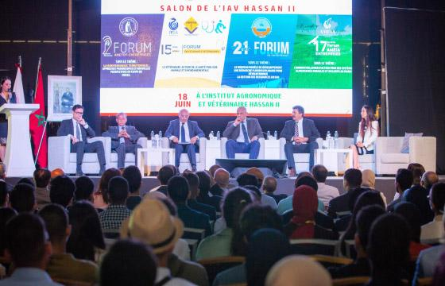

AboutUs
EL KALAIImane
Je suis etudiante en 5eme annee de la filiere des sciences geomatiques et ingenierie topographique a l'IAV.
Je suis etudiante en 5eme annee de la filiere des sciences geomatiques et ingenierie topographique a l'IAV.
Le cycle préparatoire intégré dure deux années avec des objectifs de préparer les étudiants à l’entrée en cycles d’ingénieurs et vétérinaire. Les cursus assurent la formation fondamentale des étudiants et contribuent à leur culture générale grâce à une formation équilibrée dans les différents champs disciplinaires.
La Filière de formation en Sciences Géomatiques et Ingénierie Topographique a pour principales missions de former le futur ingénieur topographe et de le préparer à l’exercice de sa profession dans divers domaines. Ces domaines intègrent entre autre l’équipement des espaces en infrastructure géodésique, l’établissement des cartes, le cadastre et l’expertise foncière, la collecte, le traitement et la représentation de l’information spatiale pour les besoins de la gestion des ressources et de l’aménagement du territoire et des espaces urbains et ruraux. La formation contribue aussi au développement de la recherche scientifique en réponse aux besoins des différents secteurs des sciences Géomatiques et d’ingénierie topographique
La coopération internationale est considérée comme étant un levier de base ancré dans les missions de l’IAV Hassan II qui, au fil de plusieurs décennies, a tissé de nombreux liens de coopération avec des partenaires issus des quatre coins du monde.Ayant pour principale finalité de participer à la promotion du tissu économique, social et sociétal à l’échelle mondiale, via des actions de Formation, d’Expertise et de Recherche-Développement-Innovation (RDI), l’IAV Hassan II perçoit sa coopération internationale à travers 3 perspectives majeures ; à savoir : La Coopération Bilatérale, la Coopération UE et la Coopération Sud-Sud.